1 个人简介
| 姓名 | 何俊华 |
| 专业 | 计算机科学与技术 |
| 学习方向 | 3D设计、创客实践、算法竞赛 |
| 个人目标 | 系统完成创客训练，提升硬件+软件综合能力，备战算法竞赛，积累项目经验 |
热爱动手实践，对电子制作和 3D 设计充满兴趣。希望通过创客课程将理论知识转化为实际项目能力，在跨学科的实践中不断成长。
2 什么是创客
创客（Maker）是指热衷于创意落地、动手实践的人群，核心理念是"把想法变成现实"。创客运动源于 DIY 文化，随着开源硬件和 3D 打印技术的普及而蓬勃发展，强调开源共享、跨学科融合与持续创新。
动手实践
从想法到原型，亲手制作
开源共享
分享设计，社区协作
跨学科融合
电子 + 编程 + 设计 + 机械
快速原型
快速迭代，持续改进
创客涵盖的领域
- 电子制作 — 焊接电路、传感器应用、嵌入式开发
- 3D 设计与打印 — 建模、切片、FDM/SLA 打印
- 编程实践 — Arduino、Python、物联网控制
- PCB 设计 — 原理图绘制、PCB 布局、打样制造
- 设计思维 — 用户需求分析、原型测试、迭代优化
3 Git 学习记录
Git 是目前最流行的分布式版本控制系统，由 Linus Torvalds 于 2005 年开发。它能够高效地跟踪文件变化、管理项目版本、支持多人协作开发，是现代软件开发的基础设施。
常用 Git 命令
# 初始化仓库 git init # 添加文件到暂存区 git add . git add index.html # 提交更改 git commit -m "feat: 添加首页内容" # 推送到远程仓库 git push origin master # 拉取远程更新 git pull origin master # 查看状态与日志 git status git log --oneline # 分支操作 git branch feature-1 git checkout feature-1 git merge feature-1
Git 工作流程
Working Dir
Staging
Local Repo
Remote
学习心得
通过本课程的 Git 学习，我掌握了版本控制的基本概念和常用操作。从最初的 git init 到使用分支进行协作开发，Git 让我体会到代码管理的规范性和重要性。使用 Gitee 托管代码后，也更加理解了远程协作的工作流程。
学习过程记录
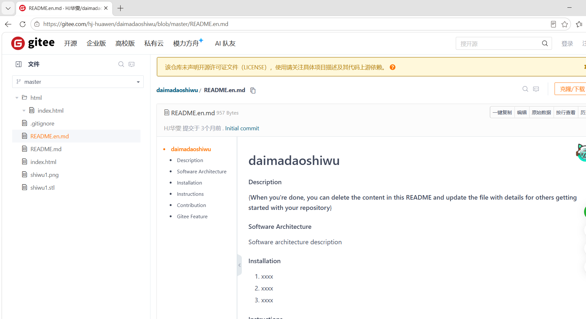
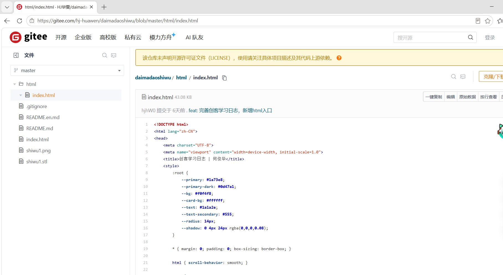
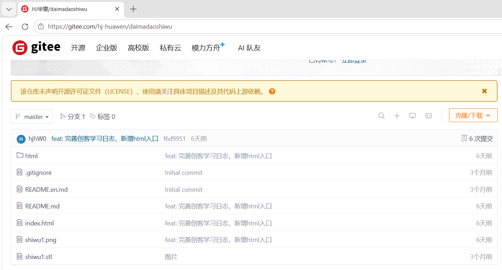
4 3D 设计与 3D 打印
3D 设计与打印是创客实践中的核心技术之一，能够将数字模型快速转化为实体原型，极大地加速了从创意到产品的过程。
常用 3D 设计工具
| 工具 | 特点 | 适用场景 |
|---|---|---|
| TinkerCAD | 在线、免费、易上手 | 初学者入门 |
| Fusion 360 | 参数化建模、云端协作 | 机械零件设计 |
| SolidWorks | 专业级、工程仿真 | 工业设计 |
| Blender | 开源、强大的曲面建模 | 艺术造型、动画 |
3D 打印工作流程
3D 打印技术对比
| 技术 | 材料 | 精度 | 特点 |
|---|---|---|---|
| FDM | PLA / ABS | 中等 | 成本低、应用广 |
| SLA | 光敏树脂 | 高 | 表面光滑、细节好 |
| SLS | 尼龙粉末 | 高 | 无需支撑、强度高 |
实践作品
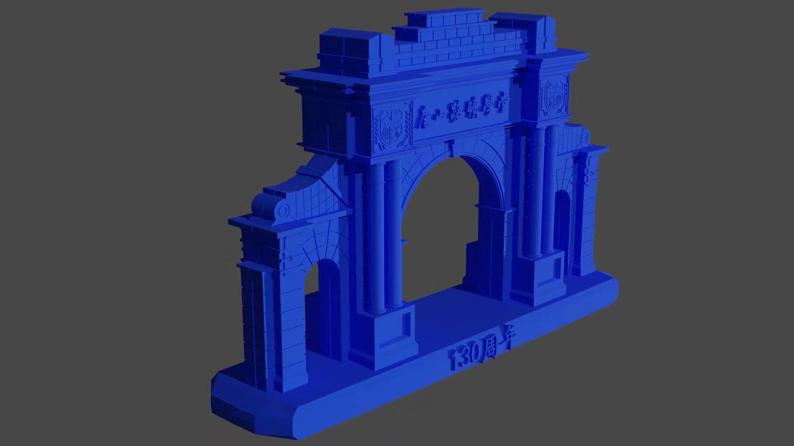
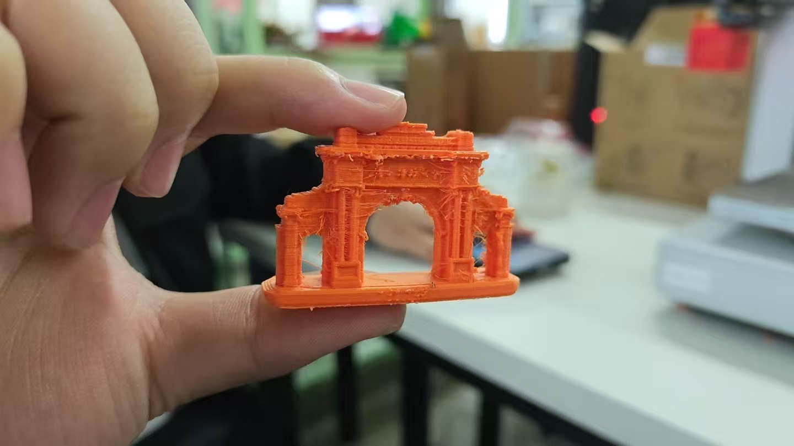
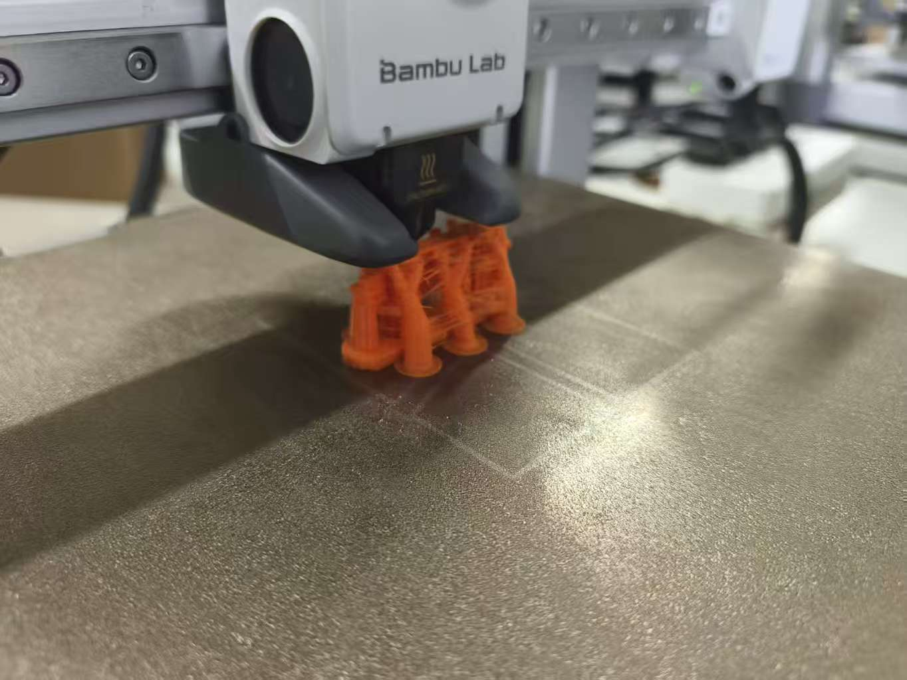
5 电子焊接
电子焊接是创客的基本功，是将电子元器件连接到电路板上的关键技术。掌握焊接技能是进行电子制作和硬件开发的前提。
焊接工具清单
- 电烙铁 — 30-60W，温度可调为佳
- 焊锡丝 — 含松香芯的有铅/无铅焊锡
- 助焊剂（焊膏） — 提高焊接润湿性
- 吸锡器 / 吸锡带 — 修正焊点、拆焊
- 辅助固定架 — 带放大镜的 PCB 固定夹
- 斜口钳 / 镊子 — 剪引脚、夹持元件
焊接步骤
- 准备 — 清洁焊盘，预热烙铁至合适温度（约 320-360°C）
- 加热 — 将烙铁头同时接触焊盘和元件引脚
- 送锡 — 从另一侧送入焊锡丝，让锡液自然流动覆盖焊盘
- 移开 — 先移走焊锡丝，再移开烙铁
- 检查 — 焊点应呈光亮的圆锥形，无虚焊、桥接
- 焊接时保持通风，避免吸入焊烟
- 烙铁头温度超过 300°C，切勿触摸
- 使用护目镜保护眼睛
- 焊接完成后及时断电
常见焊接缺陷
| 缺陷 | 表现 | 原因 | 解决方法 |
|---|---|---|---|
| 虚焊 | 焊点灰暗、不光滑 | 加热不足 | 重新加热补焊 |
| 桥接 | 相邻焊点连锡 | 送锡过多 | 用吸锡器去除多余焊锡 |
| 冷焊 | 焊点表面粗糙 | 焊锡凝固时被移动 | 重新加热，保持静止 |
焊接实践
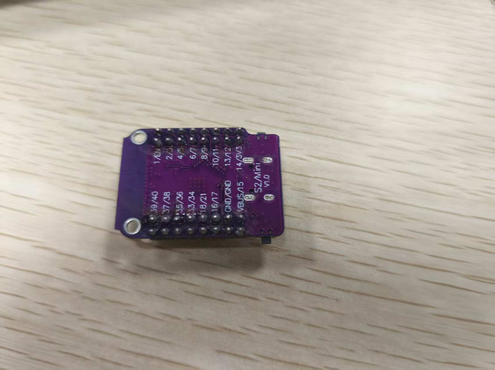
6 嵌入式计算
嵌入式计算系统是以微控制器为核心的专用计算平台，广泛应用于物联网、智能家居、机器人等创客项目中。
主流开发平台对比
| 平台 | 处理器 | I/O | 连接性 | 适用场景 |
|---|---|---|---|---|
| Arduino Uno | ATmega328P | 14D + 6A | USB / UART | 入门学习、简单控制 |
| ESP32 | Xtensa 双核 | 34D + 18A | WiFi + BLE | 物联网项目 |
| STM32 | ARM Cortex-M | 丰富 | 多种外设 | 工业控制、高性能需求 |
| Raspberry Pi | ARM Cortex-A | 40Pin GPIO | WiFi + BLE + Ethernet | 图像处理、服务器 |
ESP32 实践项目：WiFi 智能门锁
基于 ESP32 的 WiFi 智能门锁系统，通过 ESP32 自建 WiFi 热点，用户连接后在手机浏览器上即可远程控制门锁的开关，同时支持物理按钮手动开锁。
系统架构
| 模块 | 引脚 | 功能 |
|---|---|---|
| 舵机 SG90 | GPIO 2 | 驱动锁舌，0° 关锁 / 90° 开锁 |
| LED 指示灯 | GPIO 5 | 开锁亮灯、关锁灭灯 |
| 物理按钮 | GPIO 4 | 手动切换开/关锁（带消抖） |
核心代码解析
// WiFi 热点配置 const char* ssid = "ESP32_Lock"; const char* password = "12345678"; WiFi.softAP(ssid, password); // 舵机控制 — 两个角度对应开/关锁 const int LOCK_ANGLE = 0; const int UNLOCK_ANGLE = 90; myServo.write(isLocked ? LOCK_ANGLE : UNLOCK_ANGLE); // Web 路由 — 点击网页按钮触发 server.on("/", handleRoot); // 首页显示状态 server.on("/lock", handleLock); // 关锁 server.on("/unlock", handleUnlock);// 开锁 // 物理按钮 — 消抖后切换状态 if ((millis() - lastDebounceTime) > debounceDelay) { if (buttonState == LOW) setLock(!isLocked); }
网页控制界面
ESP32 作为 Web Server，内置简洁的 HTML 控制页面。手机连接 WiFi 热点后，浏览器访问 192.168.4.1 即可看到当前锁状态，并通过"开锁""关锁"按钮远程控制。
学习过程
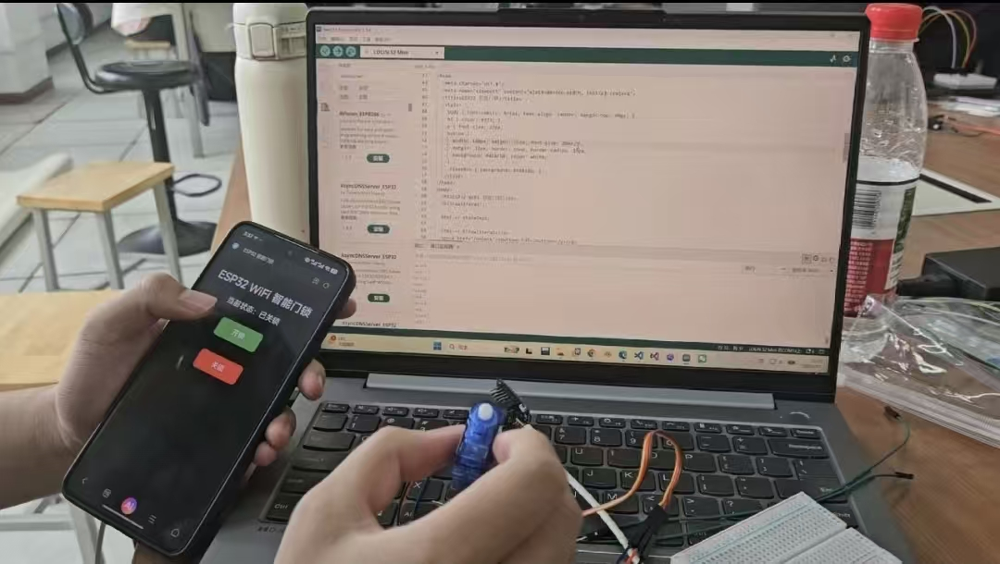
学习心得
通过嵌入式计算的学习，我了解了微控制器的工作原理和 GPIO 的基本操作。从点亮第一颗 LED 到完成 WiFi 智能门锁项目，每一步都让我对硬件编程有了更深的理解。ESP32 的 WiFi 功能让我体验到了物联网的魅力——用手机就能远程控制物理设备，这种"软硬结合"的感觉非常有成就感。
7 中期创客项目
团队介绍
| 成员 | 负责内容 |
|---|---|
| 何俊华 | ESP32 程序编写、WiFi 控制逻辑开发 |
| 李虹汶 | 电路焊接、硬件组装调试 |
| 罗一航 | 3D 建模、蛇形外壳设计与打印 |
项目简介
本项目制作了一个 WiFi 控制的蛇形灯：使用 3D 打印制作蛇形模型外壳，内部嵌入 LED 灯带，通过 ESP32 建立 WiFi 热点，手机连接后在网页上即可远程控制灯的亮灭。
制作过程
需求分析
确定项目目标为"WiFi 控制蛇形灯"，调研 ESP32 WiFi 控制方案和 3D 打印蛇形结构的可行性，明确功能需求：手机远程开关灯、蛇形外观美观、内部可嵌入 LED。
方案设计
选择 ESP32 作为主控芯片（自带 WiFi），设计系统架构：ESP32 建立热点 → 手机连接 → 网页控制 → GPIO 驱动 LED。同步规划蛇形模型的 3D 结构，确保内部有足够空间走线和安装 LED。
原型制作
在面包板上搭建 ESP32 + LED 电路原型，编写基础 WiFi 控制程序并测试通过。使用 TinkerCAD / Fusion 360 完成蛇形模型的 3D 建模，分段设计便于打印和组装。
集成调试
将 LED 灯带装入 3D 打印的蛇形外壳中，焊接 ESP32 与 LED 的连接电路，联调 WiFi 控制功能，确保网页按钮能准确控制灯的亮灭。
优化完善
优化网页控制界面的显示效果，改进蛇形模型的外观细节（打磨、上色），调整 LED 亮度和散热，撰写项目文档和使用说明。
成果展示
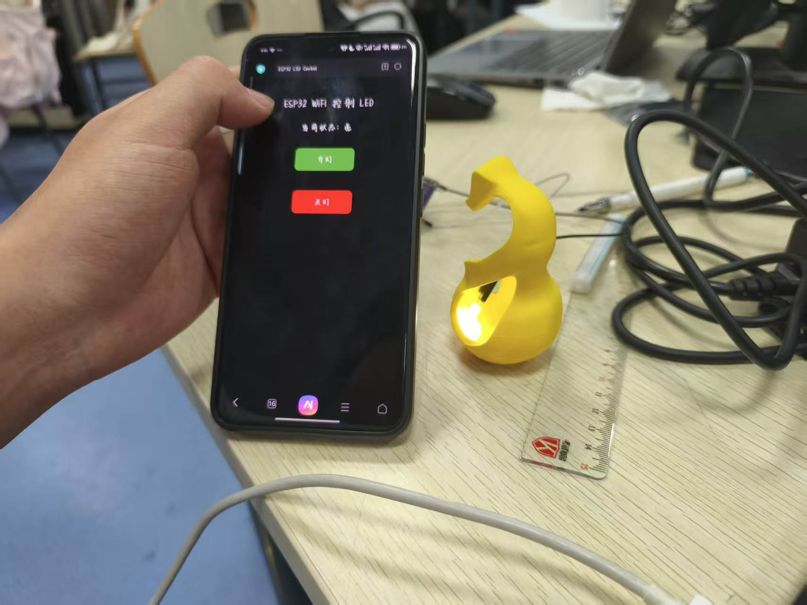
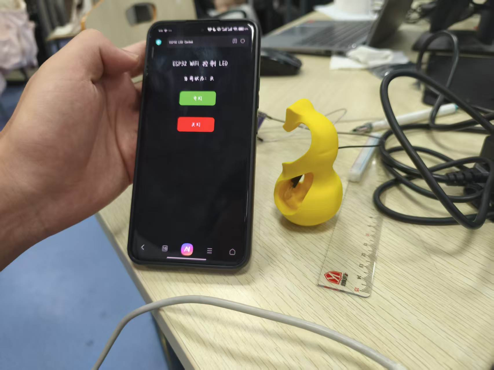
8 PCB 设计
PCB（Printed Circuit Board，印刷电路板）是电子产品的核心载体。学会 PCB 设计是创客从面包板原型走向产品化的关键一步。
PCB 设计流程
常用 PCB 设计工具
| 工具 | 特点 | 适用人群 |
|---|---|---|
| KiCad | 开源免费、功能完善 | 创客、学生 |
| EasyEDA | 在线使用、集成嘉立创打样 | 快速原型 |
| Altium Designer | 专业级、企业广泛使用 | 工程师 |
| Lceda（立创EDA） | 中文支持好、元件库丰富 | 国内用户 |
PCB 关键概念
- 层（Layer） — 单层 / 双层 / 多层板，决定布线空间
- 走线（Trace） — 铜箔导线，连接各元件引脚
- 过孔（Via） — 连接不同层之间的导电孔
- 阻焊层（Solder Mask） — 绿色/红色保护层，防止短路
- 丝印层（Silkscreen） — 标注元件标识和版本信息
设计实践
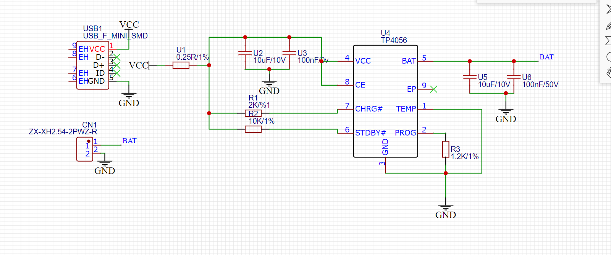
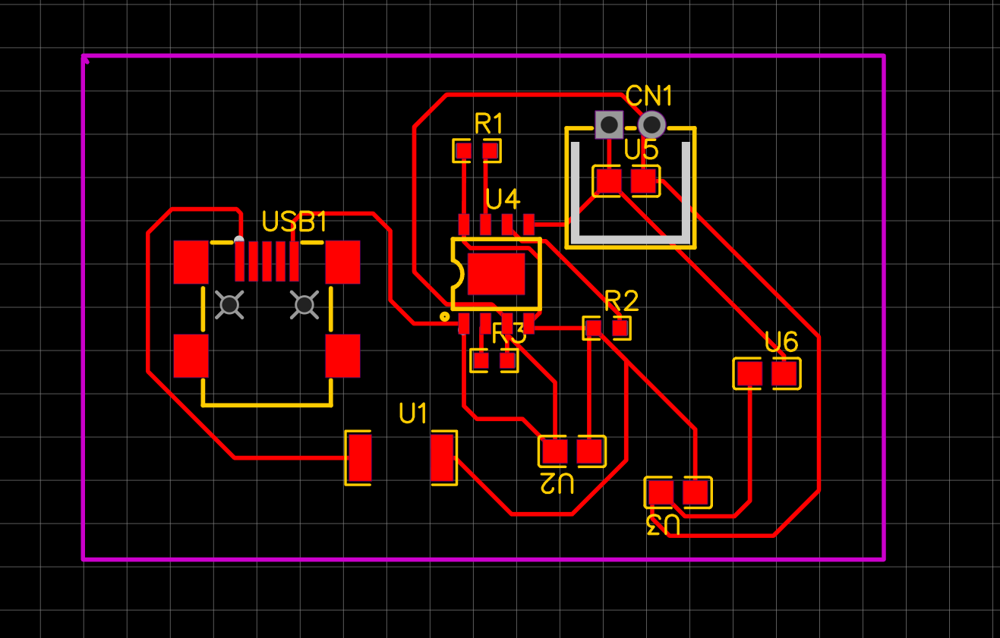
9 设计思维
设计思维（Design Thinking）是一种以人为中心的创新方法论，通过同理心理解用户需求，快速原型验证解决方案，广泛应用于产品开发和创客实践中。
设计思维五阶段
共情
深入了解用户需求和痛点
定义
明确核心问题和设计目标
构思
头脑风暴，探索多种方案
原型
快速制作最小可行原型
测试
收集反馈，迭代改进
在创客项目中的应用
设计思维不是线性的 — 在实际项目中，我们经常需要在各阶段之间反复迭代。例如在测试阶段发现用户需求理解有偏差，就需要回到共情阶段重新调研。
- 共情阶段 — 观察目标用户的实际使用场景，记录痛点
- 定义阶段 — 将模糊的需求转化为清晰的设计问题
- 构思阶段 — 团队头脑风暴，不急于评判，追求数量
- 原型阶段 — 用最低成本（纸板、3D打印、面包板）快速验证想法
- 测试阶段 — 让真实用户试用，观察而非询问
学习反思
设计思维让我认识到，好的产品不仅仅是技术上的实现，更重要的是解决真实的用户问题。在创客项目中运用设计思维，能够避免"为了做而做"的陷阱，让每一步都更有方向感和价值。
10 期末创新项目
团队介绍
| 成员 | 负责内容 |
|---|---|
| 何俊华 | 软件开发、主程序编写与调试 |
| 李虹汶 | 硬件焊接、电路搭建与调试 |
| 李成家 | PCB 设计、电路板打样与优化 |
| 罗一航 | 3D 建模、外壳设计与打印 |
| 李纪彤 | 项目文档、测试验证与展示 |
项目背景与目标
国际象棋是一项历史悠久的智力运动，正式比赛中需要使用棋钟来控制双方的思考时间。市面的专业棋钟价格较高且功能单一，我们决定利用创客课程所学知识，设计制作一款 基于 ESP32-C3 的双屏国际象棋计时器。
项目目标：
- 实现双屏独立显示，白方黑方各自倒计时
- 支持按键切换当前计时方，模拟真实棋钟操作
- 具备暂停/继续、重置功能
- 超时自动判负，屏幕颜色变化提示
- 外观便携、操作直观，可用于实际对弈
系统设计
| 模块 | 型号/规格 | 功能 |
|---|---|---|
| 主控芯片 | ESP32-C3 | 核心控制，处理按键与计时逻辑 |
| 显示屏 | TFT ST7735 × 2 | 分别显示白方和黑方剩余时间 |
| 按键 | 4 个微动开关 | K1 重置 / K2 暂停 / K3 白方 / K4 黑方 |
| 初始时间 | 15 分钟 | 每方默认 15 分钟倒计时 |
核心代码逻辑
// K3：白方按下，黑方开始计时 if (getButtonPressed(2)) { if (!gameOver) { activePlayer = BLACK; running = true; lastUpdateMs = millis(); updateDisplay(); } } // K4：黑方按下，白方开始计时 if (getButtonPressed(3)) { if (!gameOver) { activePlayer = WHITE; running = true; lastUpdateMs = millis(); updateDisplay(); } }
制作过程
需求分析与方案设计
调研市面棋钟产品，明确功能需求：双屏显示、按键切换、暂停重置、超时判负。确定以 ESP32-C3 为主控，双 ST7735 TFT 屏为显示方案，分工协作开发。
硬件搭建与焊接
根据引脚定义搭建电路，焊接 ESP32-C3 与两块 TFT 屏的连接，安装 4 个功能按键并接入 GPIO 引脚，使用面包板验证电路可行性。
软件开发与调试
编写主程序，实现计时逻辑、按键消抖、屏幕刷新等功能。通过串口打印状态信息辅助调试，确保计时准确、切换流畅。
PCB 设计与打样
将面包板电路转化为 PCB 设计，使用立创 EDA 绘制原理图和布局，打样制造成品电路板，提升整体稳定性和美观度。
外壳设计与 3D 打印
根据 PCB 和屏幕尺寸设计外壳，使用 Fusion 360 建模，3D 打印制作外壳，预留按键孔位和屏幕开窗，确保组装紧凑。
整机组装与测试
将 PCB、屏幕、按键装入外壳，进行完整功能测试：计时准确性、按键响应、超时判负、屏幕显示效果，修复发现的问题并优化体验。
技术亮点
双屏独立显示
两块 TFT 屏通过 CS 片选独立控制，同时显示双方时间
精准按键消抖
40ms 消抖延迟，确保按键响应可靠，避免误触发
状态颜色反馈
计时中蓝色、暂停黑色、超时红色、胜利绿色
软硬件结合
ESP32 程序 + 自制 PCB + 3D 外壳，完整产品化
成果展示
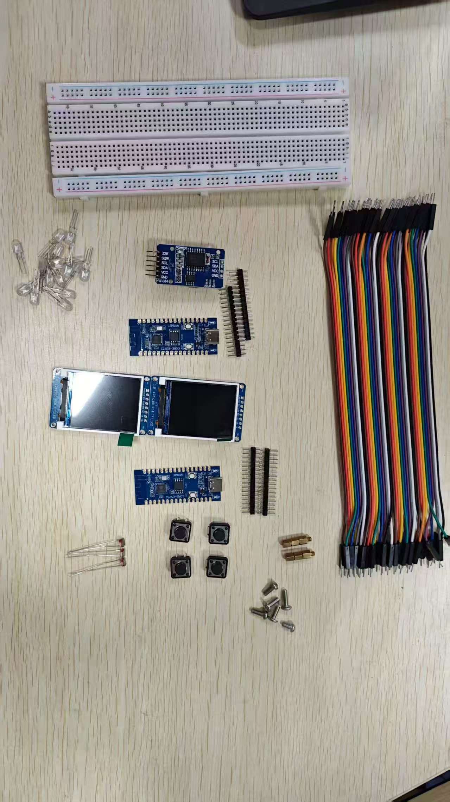
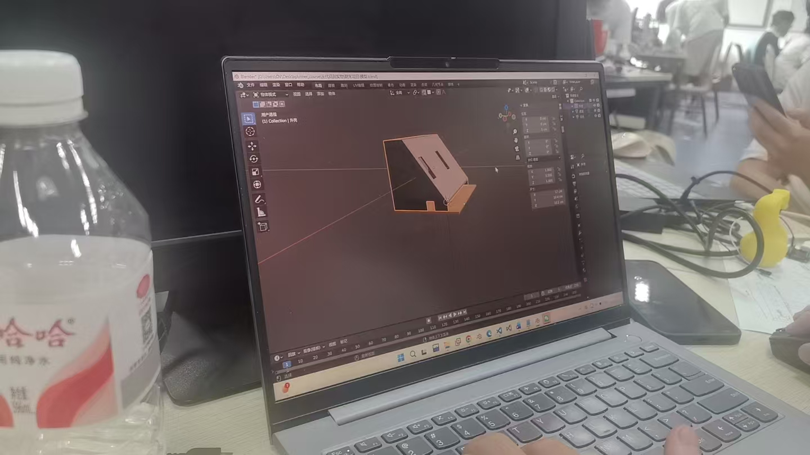
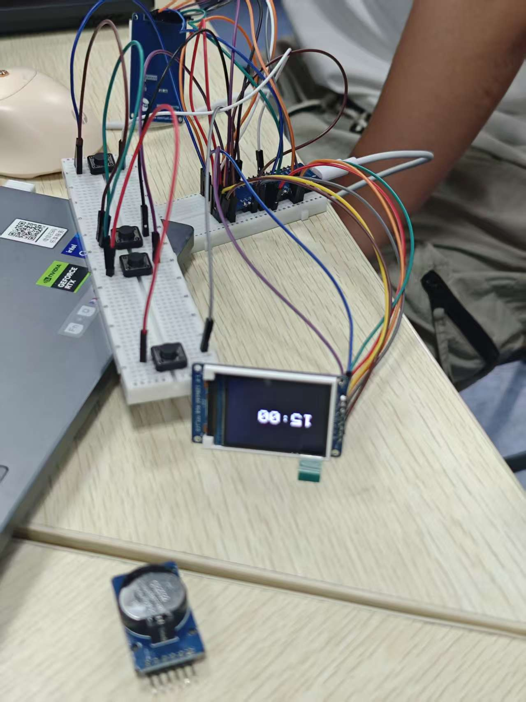
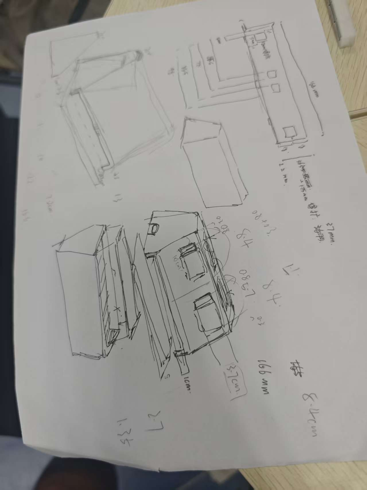
总结与展望
通过本次期末项目，我们将创客课程中学到的 3D 设计、电子焊接、PCB 设计、嵌入式编程等技能综合运用，完成了一个从设计到成品的完整产品开发过程。国际象棋计时器不仅是一个功能性的硬件作品，更是团队协作与工程实践的成果。
遇到的挑战：
- 双屏同时驱动时的 SPI 总线冲突问题，通过 CS 片选时序优化解决
- 按键消抖的参数调优，需要在响应速度和防误触之间找到平衡
- 外壳与 PCB 的配合精度，多次迭代打印才达到理想效果
未来改进方向：
- 增加时间设置功能，支持多种时间规则（5分钟快棋、30分钟慢棋等）
- 加入蜂鸣器，超时时发出声音提示
- 添加走棋计数和历史记录功能
- 优化电源管理，增加电池供电和低功耗模式